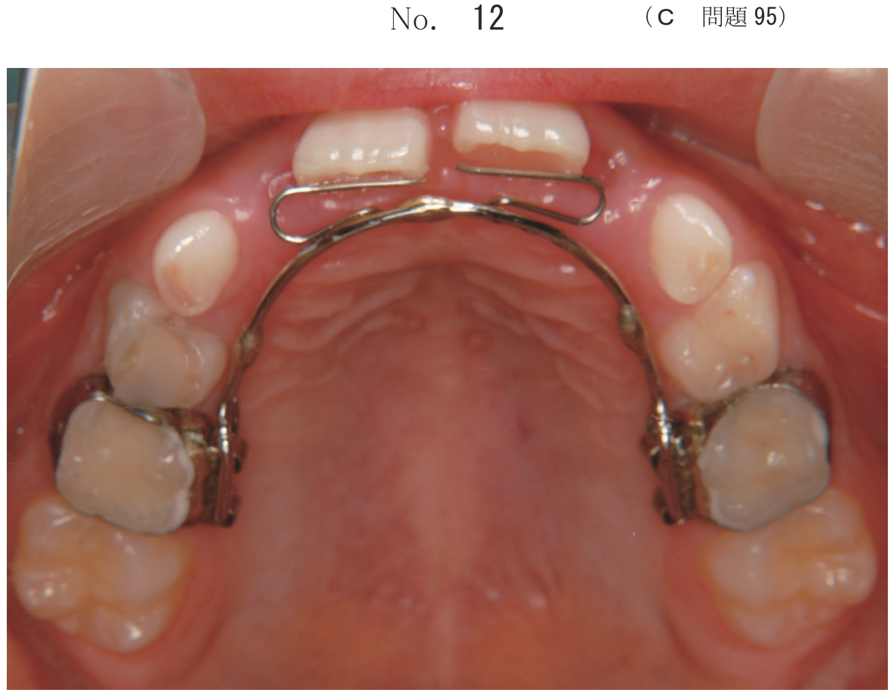
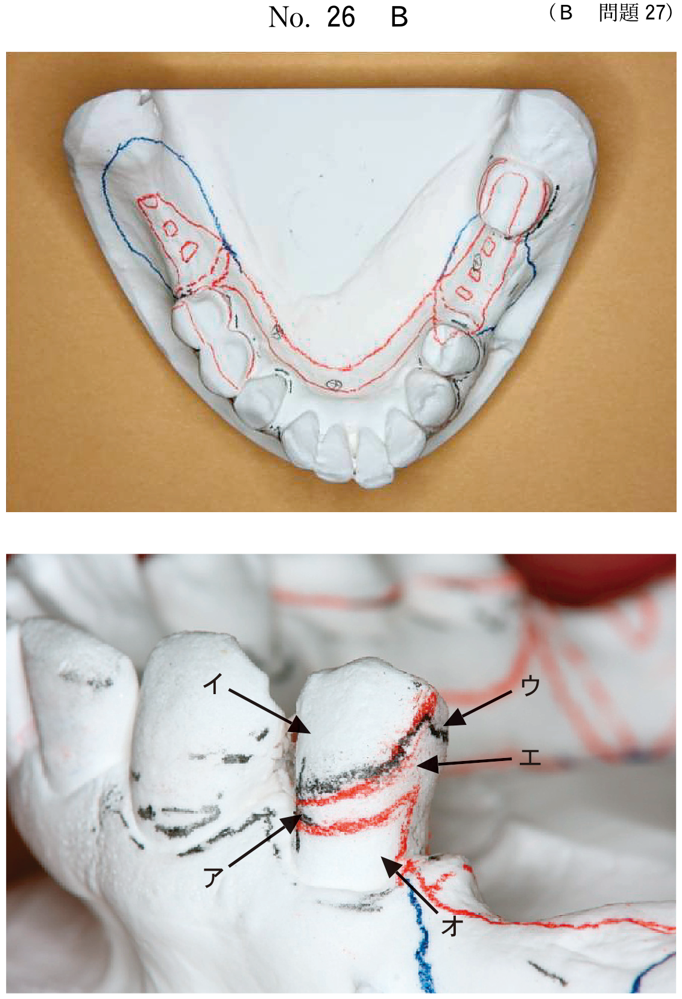

抗菌療法
薬物療法の概要
薬物療法（drug therapeutics）とは、抗菌薬や抗炎症薬などを全身的あるいは局所的に応用して歯周病の治療を行うことをいう。歯周病は内因性感染症であり、その主体はグラム陰性嫌気性桿菌であることから、薬物を効果的に用いることは有効であると考えられる。
しかし、細菌プラークはバイオフィルムを形成していることから、基本的にはブラッシングやスケーリング・ルートプレーニング（SRP）を中心とした機械的プラークコントロールによりバイオフィルムを破壊した後に薬物を応用することが重要である。
薬物療法開始の条件
- 急性症状を呈する場合
- 歯周基本治療によりバイオフィルムが除去されていないこと
- 歯周基本治療後でも状態が改善しない場合
- 歯周外科治療後
- 全身疾患を有する患者に対する予防投与
- 全くポケットが残存できないがポケットを発生したまま維持する場合
抗菌薬の投与方法
- 全身投与（経口投与）：広汎性の歯周炎、歯周外科治療後の感染予防、膿瘍切開直後など
- 局所投与（LDDS）：部分的に深い歯周ポケットが残存する場合
経口投与に用いる代表的な抗菌薬
| 系統 | 一般名 | 商品名 | 投与期間 |
|---|---|---|---|
| ペニシリン系 | アモキシシリン | サワシリン | 7日間 |
| セフェム系 | セフカペンピボキシル | フロモックス | 3〜5日間 |
| リンコマイシン系 | 塩酸クリンダマイシン | ダラシンカプセル | 3〜5日間 |
| マクロライド系 | アジスロマイシン | ジスロマックSR | 1日間 |
| ニューキノロン系 | レボフロキサシン | クラビット錠 | 5〜7日間 |
| テトラサイクリン系 | ミノサイクリン塩酸塩 | ミノマイシン | 7〜10日間 |
局所薬物配送システム（LDDS）
LDDS（local drug delivery system：局所薬物配送システム）は、少ない投与量で高濃度の薬効成分が長時間維持でき、耐性菌の出現、副作用、腸内細菌への影響がきわめて少ないという利点をもつ。
LDDS製剤
| 薬剤 | 商品名 | 形状 | 用量 |
|---|---|---|---|
| ミノサイクリン塩酸塩 | ペリオクリン、ペリオフィール | ペースト | 10mg 0.5g 1シリンジ |
| テトラサイクリン塩酸塩 | テトラサイクリン・プレステリン | ペースト | 18mg 0.6g 1カートリッジ |
ポイント：LDDSで最も使用されるのはミノサイクリン塩酸塩（ペリオクリン）。シリンジタイプで歯周ポケット内に直接注入する。
術前与薬
SRPや抜歯などの歯科治療後に菌血症が生じることが報告されている。感染性心内膜炎、人工弁置換術後患者のようなハイリスク患者においては、菌血症により感染性心内膜炎を引き起こす可能性があることから、術前の抗菌薬投与が行われる。
代表的な術前投与薬と用法
| 系統 | 一般名 | 投与量 |
|---|---|---|
| ペニシリン系 | アモキシシリン | 処置1時間前に2gを経口投与 |
| リンコマイシン系 | クリンダマイシン | 処置1時間前に600mgを経口投与 |
| セフェム系 | セファレキシン | 処置1時間前に2gを経口投与 |
| マクロライド系 | アジスロマイシン | 処置1時間前に2gを経口投与 |
歯周病原細菌と抗菌薬の選択
- P. gingivalis：テトラサイクリン系、ペニシリン系、リンコマイシン系が有効
- A. actinomycetemcomitans：ニューキノロン系、テトラサイクリン系、ペニシリン系が有効
アジスロマイシンにはバイオフィルム形成抑制作用と破壊作用があることが示されている。
フルマウスディスインフェクション（FMD）
FMD（full mouth disinfection）は、化学的プラークコントロールとしての薬物療法と機械的な歯肉縁下プラークコントロール（SRP）を併用した方法であり、抗菌薬を投与した上で全顎のSRPを1回で行う術式である。これによりポケット内に存在する歯周病原細菌を一掃し、安定したポケット内細菌叢を形成することで、早期に歯周ポケットの減少とアタッチメントゲインが得られ、長期間安定した歯周組織の状態を得ることができるとされる。
過去問
52歳の女性。慢性歯周炎と診断し、歯周基本治療を行った。再評価後の残存ポケットに薬剤を適用した。使用した薬剤（別冊No.16A）と適用中の口腔内写真（別冊No.16B）とを別に示す。
使用した薬剤の有効成分はどれか。1つ選べ。


b アミノ安息香酸エチル
c セフカペンピボキシル塩酸塩
d グルコン酸クロルヘキシジン
e エナメルマトリックスタンパク質
【解説】写真はLDDS（局所薬物配送システム）の適用。ミノサイクリン塩酸塩（ペリオクリン）をシリンジで歯周ポケット内に注入している。アミノ安息香酸エチルは表面麻酔薬、セフカペンピボキシルは経口抗菌薬、グルコン酸クロルヘキシジンは含嗽剤、EMDは歯周組織再生療法に用いる。
53歳の女性。下顎右側側切歯部歯肉の疼痛と腫脹とを主訴として来院した。2┐の歯周ポケットは全周で12mm、動揺度は3度である。初診時の口腔内写真（別冊No.32A）とエックス線写真（別冊No.32B）とを別に示す。
まず行うのはどれか。1つ選べ。


b 抜 髄
c 経口抗菌薬投与
d 歯周ポケット掻爬
e スケーリング・ルートプレーニング
【解説】急性歯周膿瘍の症例。急性期には経口抗菌薬投与を優先する。全周12mm、動揺度3度と重度だが、急性症状がある場合はまず消炎を図る。炎症が落ち着いてから抜歯やSRPなどの処置を検討する。